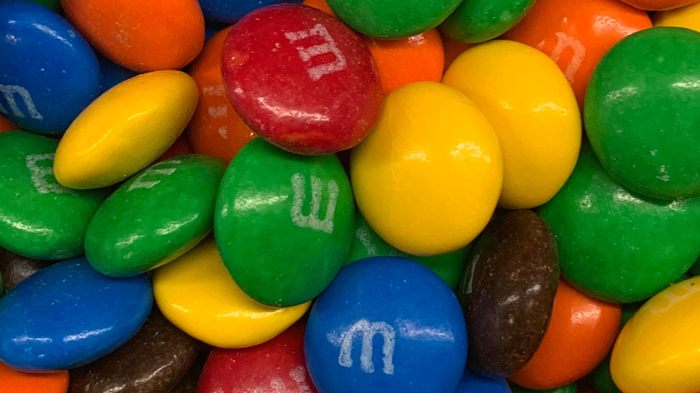

Non-CVD Vision
Deuteranopia
Protanopia
Tritanopia
Orange
In an article written by Kendra Cherry titled The Color Psychology of Orange, she unveils that orange is a color that conveys happiness and enthusiasm. Cherry also writes that orange is often a color that is used to draw and attract attention. Another characteristic of orange Cherry mentions is energy, that orange is an energetic tone. To read more of Cherry's article, READ MORE >>Non-CVD Vision
Deuteranopia
Protanopia
Tritanopia
Yellow
Medium published an article written by David Kelly titled The Psychology of Color – Yellow, where he reveals some of the qualities of the color yellow we all know and love. Kelly says Yellow includes the following positive effects:• Increased mental activity
• Heightened Awareness
• Increased Energy Levels
• Increased Metabolic Rate
For more of Kelly's article, please check out his article and READ MORE >>